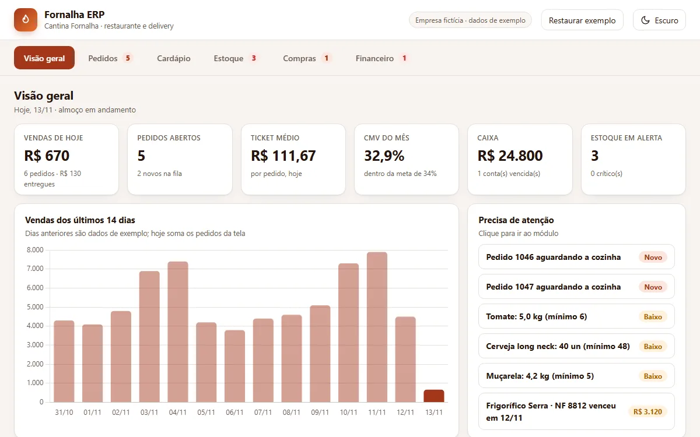

ERP · Cantina Fornalha
ERP de restaurante e food service
Pedidos que baixam o estoque pela ficha técnica, cardápio com margem por prato, compras com sugestão por fornecedor e financeiro com fluxo de caixa e DRE.

- Pedidos em quadro: novo, em preparo, pronto e entregue, com baixa de estoque pela ficha técnica
- Cardápio com custo, CMV e margem calculados dos insumos
- Compras: sugestão de reposição por fornecedor, recebimento com custo médio e conta a pagar
- Financeiro: contas a pagar e a receber, fluxo de caixa de 14 dias e DRE do mês
- Regras cobertas por 10 testes automatizados
Demonstração com dados fictícios e marca fictícia. Tudo o que você fizer fica só no seu navegador, e dá para restaurar o exemplo a qualquer momento.